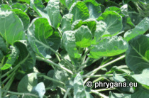

| Phrygana: la Nature en Crète principalement, mais aussi d'ailleurs ... |
|  |
|
|
| Brassica oleracea var. gemmifera | Fraxinus excelsior | Circaea lutetiana |
| Espèces: 1213--- Faune: 489 -- Flora: 702 -- Galles (Bacteria): 2 -- Champignons: 19 -- Lichens: 1 | |||||
| Nouveautés | |||||
| Flora: | Aesculus parviflora | Flora: | Cotinus coggygria | Flora: | Lamium galeobdolon subsp. argentatum |
| Flora: | Erysimum cheiranthoides | Fauna: | Acer pseudoplatanus cv. 'Leopoldii' | Flora: | Symphytum officinale |
| Floraa: | Vicia cracca | Flora: | Centaurea nemoralis | Flora: | Raphanus sativus var. oleiformis |
| 01 octobre 2021 |